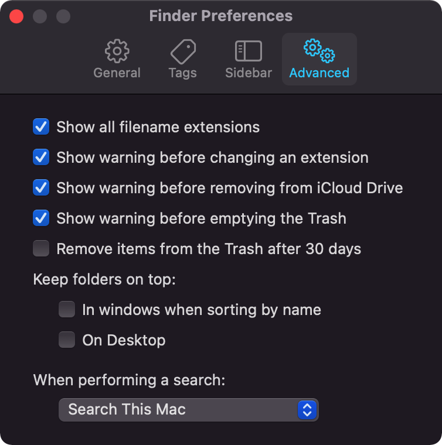

TreeviewCopyright © aleen42 all right reserved, powered by aleen42
分享我的MacOS的基本配置
Dock
- 自动隐藏
- 鼠标移上去变大
按我之前分享的那些视频的精神，能少用鼠标就少用鼠标，所以不太需要使用到Dock，所以Dock放下边，左边还是右边，我完全没有这个纠结。大家看我的视频都知道，基本上你们看不见Dock的，他都是隐藏的。
 注：我没有把Menu Bar隐藏起来，我觉得没有这个需求，要把Menu Bar隐藏起来。之前分享过日历APP，icon上显示日期是在menu bar上。
注：我没有把Menu Bar隐藏起来，我觉得没有这个需求，要把Menu Bar隐藏起来。之前分享过日历APP，icon上显示日期是在menu bar上。
Menu Bar icon
- wifi 本机是隐藏的，因为用不上wifi，除了AirDrop（但是AirDrop也不需要显示icon的）
- Bluetooth通常也是隐藏的，因为用到的频率极低
- AirDrop隐藏（用不上）
- Do Not Disturb 在里面的不用管了
- Screen Mirroring（when active)
- Display 在里的不用管了，只是不占我的位置就行
- Sound 显示（因为我有一个JBL link portable，靠这个切呢）
Now playing 不显示，最讨厌了
Accessibility Shortcuts不显示
- Fast User Switching 不显示
- Clock 我本不想用他的，但是也很无助啊，他没有这个选项啊
- spotlight 不显示
- Siri 不显示
- Time Machine 不显示
Finder Preferences 访达的偏好设置.
- General New Finder windows show:你开启访达的时候缺省位置
- Sidebar
自己安需要要不要在侧边显示出来

- Advanced 开启一下extensions的显示 
Laucher
- Alfred完结
Calendar
- Calendar完结
Dropover
- Dropover完结
terminal
- Terminal完结
Right Mouse
还有未来我分享的
- Clean APP
- Window Manager
- ……
有可能还有字体，目前的感觉已经很好看了，所以也不一定，到时候看吧